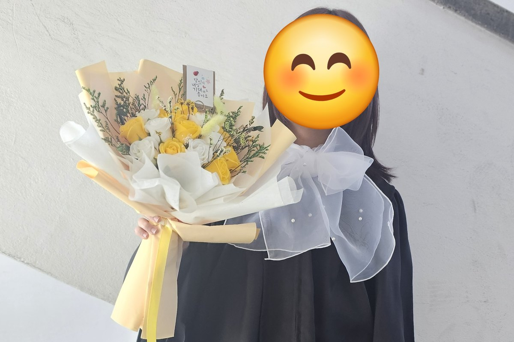
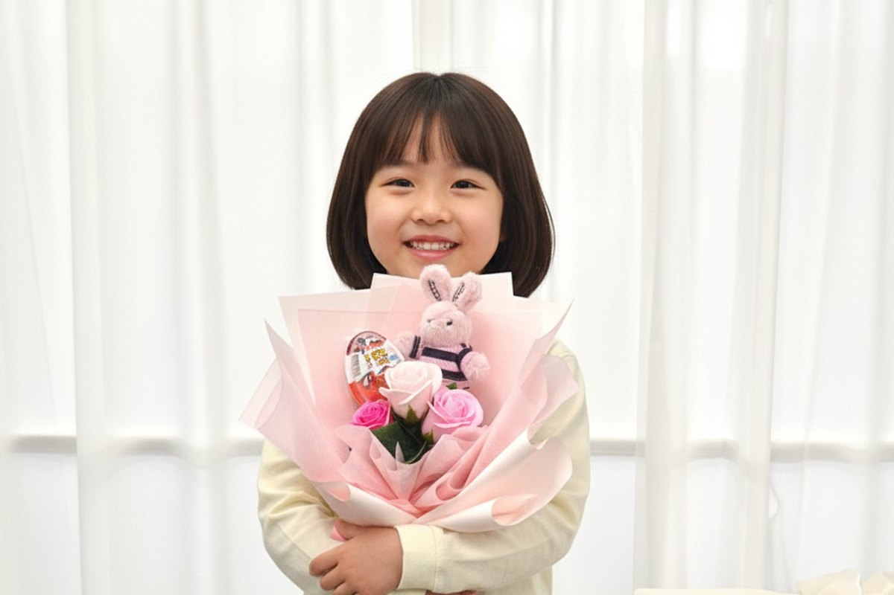
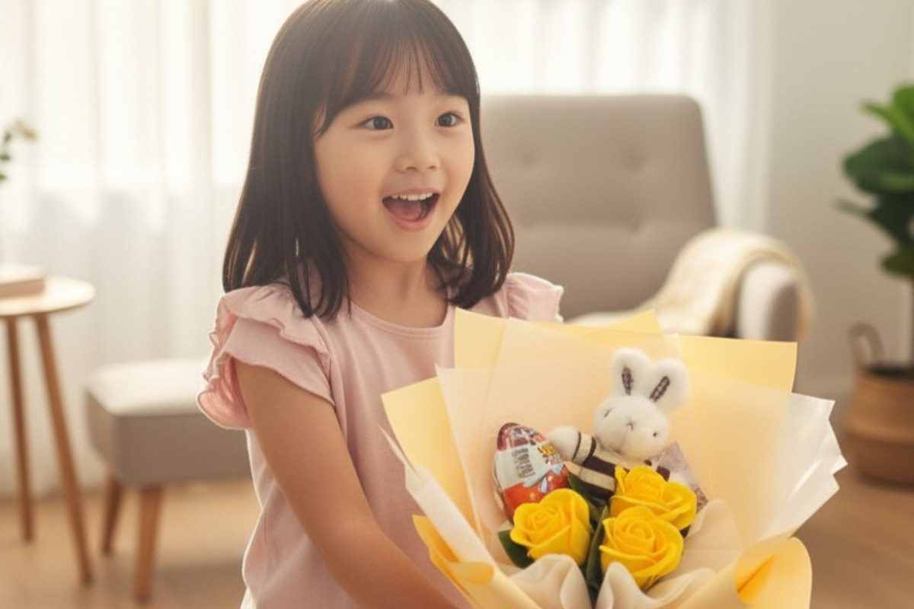
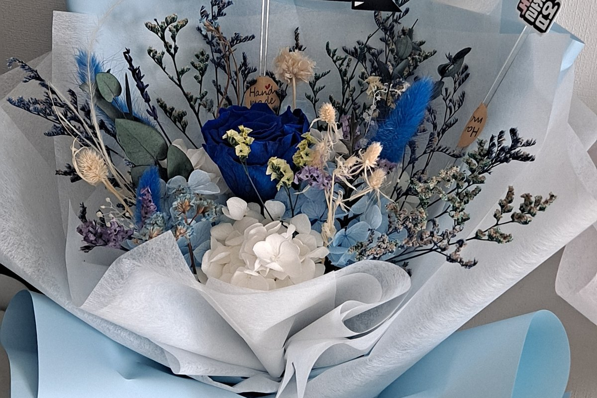

졸업식 꽃다발, "누구의" 몇 학년이냐로 답이 갈립니다
12월부터 2월까지는 졸업식 꽃다발 성수기여서 문의가 폭주합니다. 그런데 하나하나 여쭤보면 상황이 다 달라요. 유치원 졸업식에 아이가 직접 들 꽃다발을 찾는 분이 있고, 대학교 학위수여식에 들고 갈 걸 찾는 분이 있습니다. 조카 졸업식이라 너무 과하지 않은 선에서 챙기고 싶다는 분도 계시고요.
같은 "졸업식 선물"이라도 받는 사람이 몇 살인지, 부모가 챙기는 자리인지 이모·삼촌이나 조부모가 챙기는 자리인지에 따라 고민이 완전히 달라집니다. 정작 검색해보면 "졸업식 꽃다발"이라는 한 덩어리로만 나와서, 내 상황에 맞는 답을 찾기가 쉽지 않죠. 그래서 저희가 실제로 많이 받는 문의를 기준으로 나눠서 정리해봤습니다.
- 유치원·초등 저학년 — 아이가 직접 드는 자리라 크기가 첫 번째 기준입니다
- 중학교~대학교 — 사진에 담기는 볼륨과, 행사 뒤에도 남는지가 기준이 됩니다
- 조카·손주 — 마음은 전하되 부담스럽지 않은 선을 먼저 보게 됩니다
유치원·초등 저학년 — 아이가 직접 들 수 있는 크기가 기준이에요

이 나이대는 아이가 주인공이 되어 직접 꽃다발을 들고 사진을 찍는 자리가 대부분입니다. 어른 기준으로 풍성한 걸 고르면 아이가 안았을 때 얼굴이 가려져서, 정작 남는 사진에서 주인공이 안 보이는 일이 생겨요. 그래서 인형꽃다발이나, 꽃송이 수가 적은 유치원·초등학생용으로 제작한 꽃다발을 추천드립니다. 비누꽃송이 15송이 이하 구성이나 프리저브드 미니 꽃다발이 여기 해당해요.
인형꽃다발은 아이가 두 손으로 안았을 때 얼굴이 나오는 크기로 맞춰 만듭니다. 재롱잔치·학예회·유치원 졸업식 어디에 들려도 사진이 예쁘게 담겨요. 인형은 나중에 따로 떼어 가방에 달거나 아이 방에 둘 수 있어서, 그날 하루로 끝나지 않는다는 점도 부모님들이 좋아해 주시는 부분입니다. 산리오 캐릭터를 좋아하는 아이라면 마이멜로디·시나모롤이 들어간 구성도 있고, 시상식 분위기를 내고 싶으시면 트로피 모양 포트에 담긴 구성도 있습니다.
아들 졸업식이라고 다르지 않아요

"아들인데 인형꽃다발은 좀 그렇지 않을까요?" 하고 물어보시는 분이 종종 계십니다. 실제로는 색만 바꾸면 충분히 잘 어울려요. 분홍 계열 대신 노랑이나 보라처럼 색을 달리하고, 아이 이름을 넣은 메시지 픽을 함께 꽂으면 자연스럽게 남자아이 자리가 됩니다.
특히 노랑은 남녀 구분 없이 쓰기 좋은 색이라, 형제자매가 같은 해에 졸업하는 경우처럼 두 개를 한 번에 준비해야 할 때도 편합니다. 저희도 남녀 모두 사용 가능한 가성비 꽃다발을 따로 준비하고 있어요.
오히려 초등학교 졸업식처럼 친구들 앞에서 받는 자리라면, 격식 있는 꽃다발보다 인형이나 간식이 들어간 구성을 더 반가워하는 경우가 많습니다. 아이 입장에서는 꽃보다 그 안에 뭐가 들었는지가 먼저 눈에 들어오니까요. 메시지 픽에 넣을 문구가 떠오르지 않으시면 "오늘의 주인공, 연습한 만큼 가장 반짝였어" 같은 한 줄이면 충분합니다.
중학교부터 대학교까지 — 사이즈와 '안 시듦'이 기준이에요

학년이 올라가면 손에 드는 꽃다발도 좀 더 격식 있는 모습을 찾게 됩니다. 중학교·고등학교·대학교 졸업식에는 프리저브드 장미수국 꽃다발이나 수국 꽃다발을 많이 찾으세요. 유치원·초등 구간과 달리 이때부터는 송이 수가 넉넉한 구성이 자연스럽습니다.
이 구간에서 저희가 가장 자주 듣는 질문은 "생화가 아니어도 괜찮을까요?"입니다. 프리저브드는 생화의 수분을 보존액으로 치환해 만드는 꽃이라 조화와는 다릅니다. 생화의 질감을 그대로 두면서 시들지 않는 게 특징이에요. 그래서 졸업식 때 받은 꽃을 몇 주 뒤 입학식에 다시 들고 가시는 분들도 계십니다. 실제로 "가장 큰 장점은 두번 사용이 가능하다는~ 졸업 후 입학식에도 잘~"이라는 후기를 남겨주신 분도 있었어요.
사이즈는 어떤 자리인지로 정하시면 됩니다. 손에 들고 이동이 많은 자리면 미니가 편하고, 사진 위주라면 라지 쪽이 화면에 풍성하게 담깁니다. 한 가지 미리 말씀드리면, 프리저브드는 처리 과정에서 생화보다 볼륨이 조금 아담해 보일 수 있습니다. 정성이 덜 든 게 아니라 오히려 손이 더 많이 가는 방식이라 그런 거예요. 이 점이 신경 쓰이시면 한 단계 큰 사이즈를 고르시는 편이 마음이 편합니다.
조카·손주 졸업식, 부담 없이 챙기고 싶을 때
직계 자녀가 아니라 조카나 손주라면, 마음은 있어도 너무 크게 챙기긴 애매하다고 느끼시는 경우가 많죠. 부모가 이미 큰 걸 준비했을 텐데 겹치면 어쩌나 하는 걱정도 있고요. 이럴 땐 앞서 말씀드린 인형꽃다발이나 미니 구성으로도 충분히 성의가 전해집니다. 아이 입장에서는 꽃다발이 하나 더 늘어난 것보다, 인형이나 간식이 들어 있다는 게 더 기억에 남거든요.
조금 더 갖춰서 드리고 싶으시면 카네이션장미 꽃다발이 있습니다. 조부모님께서 손주 졸업식에 들고 가시기 좋은 크기이고, 카네이션이 섞여 있어 어른이 들고 계셔도 어색하지 않은 구성이에요.
자주 묻는 질문
Q. 꽃가루 알레르기가 있는 아이인데 괜찮을까요?
꽃가루 알레르기 때문에 프리저브드나 비누꽃을 찾으시는 분들이 실제로 많이 계십니다. 생화가 아니라 꽃가루가 날리지 않기 때문에, 아이가 직접 안고 사진을 찍는 자리에서도 부담이 덜합니다. 다만 아이마다 반응이 다를 수 있으니, 걱정되시면 주문하실 때 미리 말씀해 주시면 구성을 맞춰 드릴게요.
Q. 언제쯤 주문하는 게 좋을까요?
졸업식이 몰리는 1~2월은 문의가 폭주하는 시기라 미리 준비해두시는 편이 안전합니다. 프리저브드나 비누꽃은 시들지 않으니 행사보다 일찍 받아두셔도 상관없어요. 오히려 미리 받아두면 실물을 보고 색이나 크기를 확인할 시간이 생깁니다. 주문을 받은 뒤 한 송이씩 직접 만들어 보내드리기 때문에, 색이나 구성을 맞추고 싶으시면 여유 있게 문의해 주시면 좋습니다.